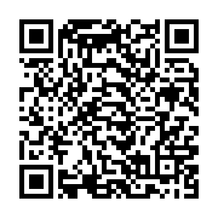

Leia com o celular para abrir esta página
Software Livre e Educação
Slides da palestra sobre o uso de Software Livre no ambiente educacional.

Leia com o celular para abrir esta página
Slides da palestra sobre o uso de Software Livre no ambiente educacional.